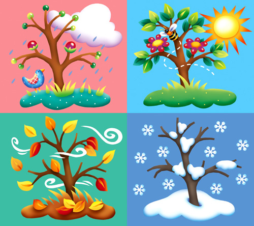

SAVE OUR SEASONS
Do you feel like winter was longer when you were young? Or is it just nostalgia? Actually, your feelings are correct.
The seasons as we know them are under threat. From 70 years ago to today, Oslo has lost a total of 18 winter days. That loss is increasing exponentially every year. Temperature increases are 2-3 times faster in the northern hemisphere compared to the global average.
Winter is becoming shorter and with less and less snow, while summer is becoming longer, with more heavy rain, drought and wildfires. There are also a few other examples of this father down the page.
The seasons control natural processes, from mating, pollen and sleep, to rain, flooding, drought and weather. If the bees wake up too late for the blossom, it’s disastrous for both them and the plants they’re meant to pollinate. This is just one sign that the seasons are under threat, and we must protect them!
Thank you SaveTheSeasons™ for letting me copy your text!
Please Support Their Cause at www.savetheseasons.com/.